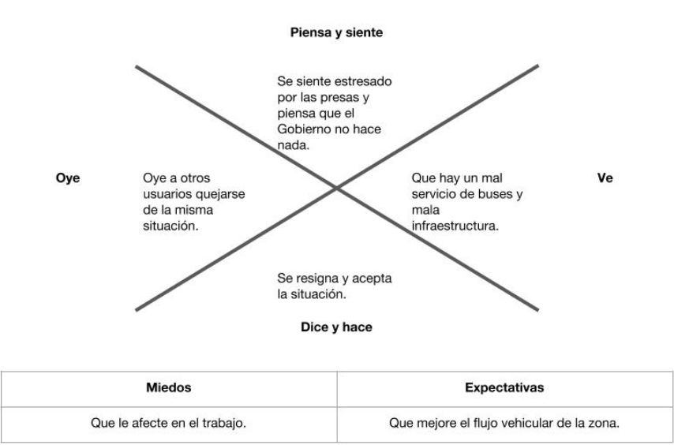
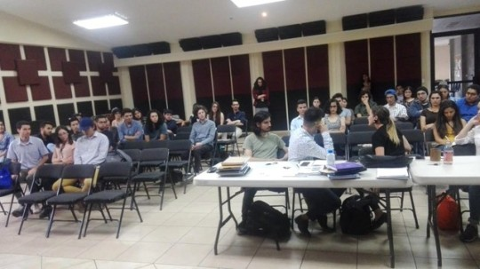
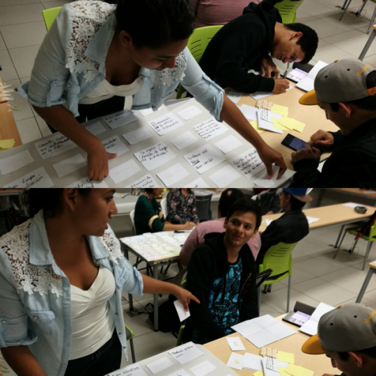
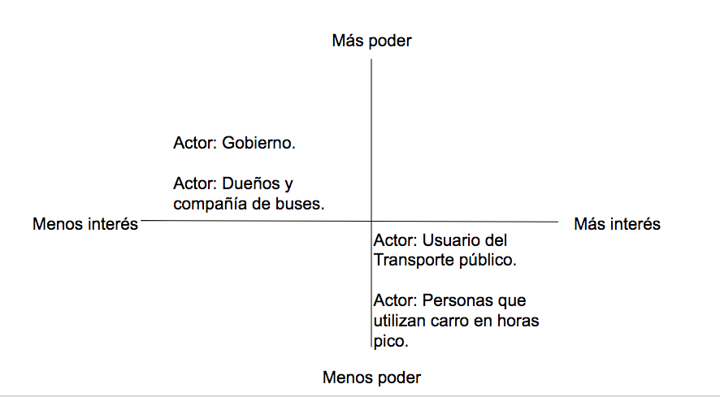
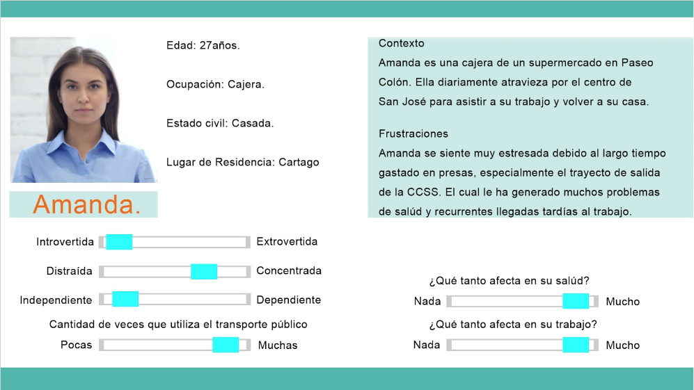
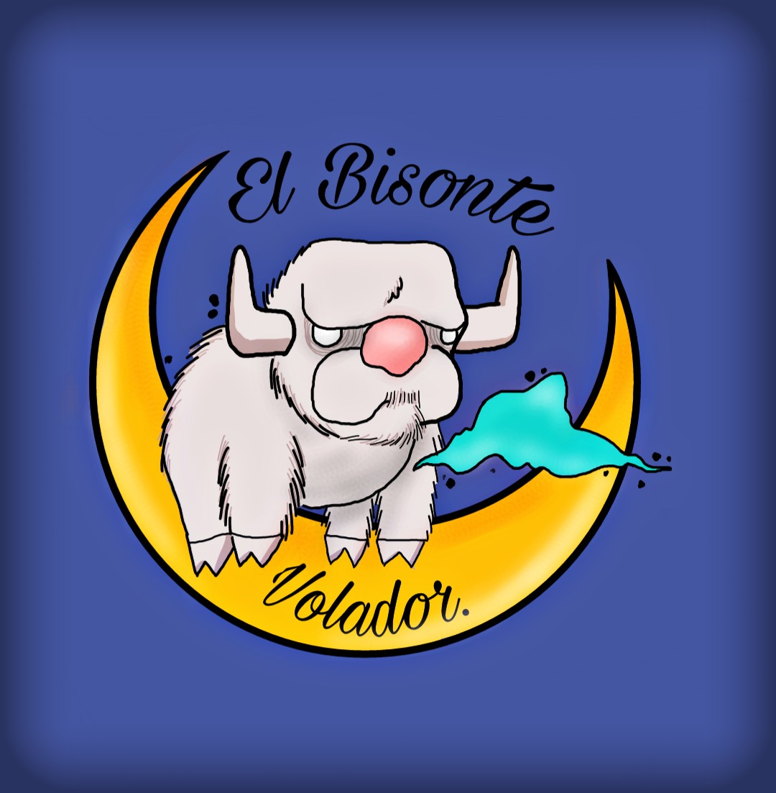
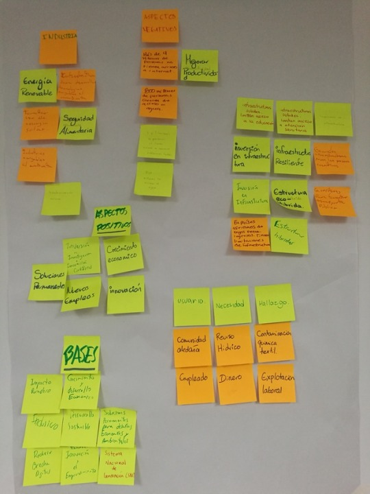
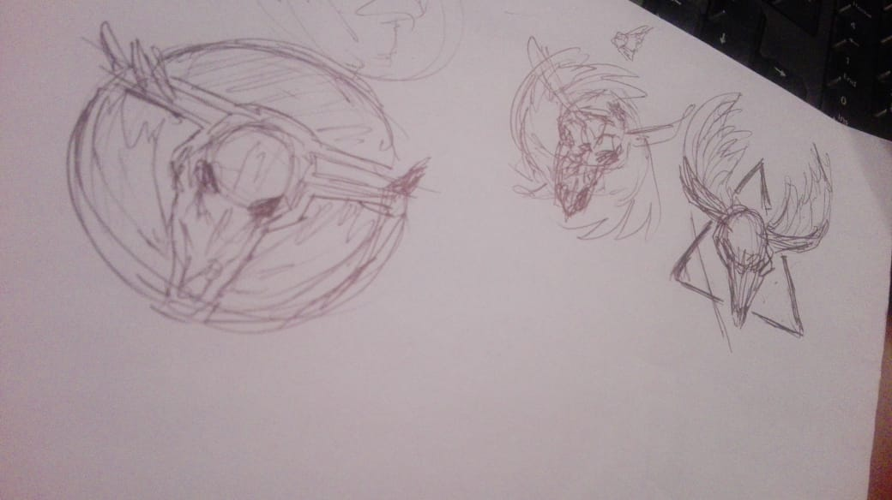
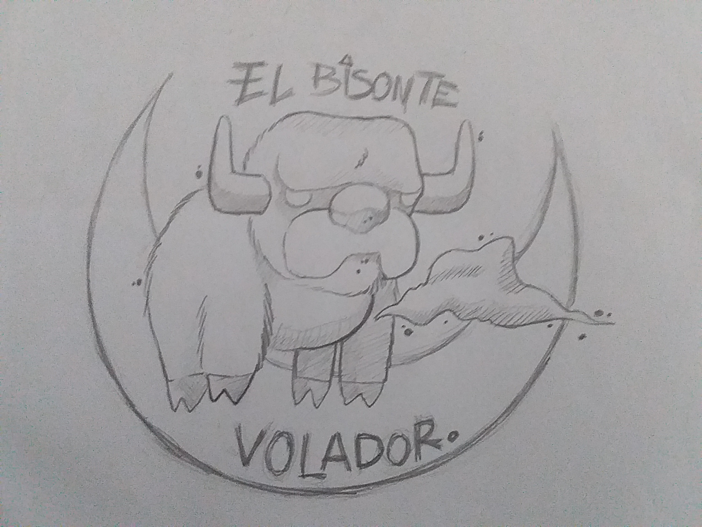

-
Semana 9
Probar
Revisión de proyecto con Msc. Adriana Ruiz
Esta semana nos visitó Msc. Adriana Ruíz, directora de Agami Multidiciplinary Studios
a quién le presentamos los avances de nuestro proyecto. En general nos sentimos bastante
conforme, sólo que tendremos que volver a iterar.
Tebdremos que replantear a nuestro "cliente", ya que todo nuestro proyecto se basa en la movilidad
de una zona específica y la necesidad de nuestra persona map es movilizarse hacia su trabajo (que
pobría hacerlo por otra ruta) tienen discondarcia.
Entonces les prtesentamos el replanteamiento de nuestro brief:
-
Semana 8
Free time
Tomamos esta semana para investigar un poco más, ya que la próxima semana nos tocará generar
y proponer ideas estamos buscando referencias y casos de éxito.
!Queremos generar un cambio¡
Estos son los 5 casos de exito que más nos llamaron la atención:

-
Semana 7
Definir
Generador de ideas
Esta semana jugamos a "generar ideas", escribimos en un pliego de papel todas las ideas de
"posibles soluciones" desde las más pequeñas y factibles hasta las más locas y descabelladas;
todo para clasificar y proponer ideas.
Luego de eso cambiamos de area de trabajo con los otros equipos con el fin de que nos propongan
y nosotros proponerles ideas de soluciones a nuestros proyectos.
Nos reimos mucho escribiendo y leyendo propuestasy nos tomamos el tiempo para conocer un poco los
proyectos que están desdarrollando nuestros compañeros.

-
Semana 6
Entrevista individual
Preparandonos para la vida
Hicimos una exposicion individual para hablar de nosotros en una entrevista, decir cualidades y
poder afrontar lo que una entrevista puede llegar a ser. La entrevista lo escuchaban profesores y estudiantes.
Durante la entrevista nos dimos cuenta que tenemos más fortalezas de las que nosotros pensamos aunque
no siempre las notamos. El punto principal era que nosotros nos vieramos como en una verdadera entrevista de trabajo.
Personas y mapa de empatía
Durante la semana tuvimos que mejorar nuestro brief, para que se centre más en lo que queremos
expresar; además, hicimos nuevas entrevistas para seguir recopilando información de nuestro usuario.
Con esta vaiosa información del usuario lográmos crear el mapa de empatía donde conoceremos y empatizaremos
más con el usuario.

-
Semana 5
Preentrega
Análisis y síntesis
Esta semana entregamos el primer avance de nuestro proyecto, ya que todavía estamos en etapa de exploración
no hemos desarrollado ninguna posible solución.
Nos fue bien pero aún hay muchas cosas que mejorar en el proyecto como explicar mejor lo que queremos hacer.
!seguimos explorando, seguimos delimitando¡

Ver las exposiciones nos ayudo a entender más sobre el tema y anotar los errores que hemos visto de los otros
compañeros como un ‘feedback’ general.
-
Semana 4
Definir y empatizar
El problema de diseño y la iteración; el pensamiento divergente y converegente.
Comenzamos el día categorizando la información recopilada, agrupamos según similitudes.

A partir de esto buscamos delimitar el tema con el propósito de una mejor dirección de la
investigación. Se llega al acuerdo grupal de trabajar alrededor de la problematica de caos vial
que normalmente se presenta en el transporte público.
A partir de la delimitación del tema trabajamos en la definición de la problemática, el usuario
por estudiar y las necesidades de estos usuarios.
Con toda la información del usuario recopilada logramos delimitar nuestro mapa de audiencia;
herramienta que nos ayudó mucho a descubrir quienes son los usuarios involucrados en nuestra problemática.

Durante la semana definimos a nuestra persona map y descubrimos varias de sus principales
caracteristicas y necesidades.

-
Semana 3
Empatizar
Recopilación de la información
Juntamos la información recopilada por todos los miembros sin dicernir si nos servirá o no.
en esta etapa del proceso mientas más información se tenga mejor.
Ya que nuestra área por estudiar es la industria economía e innovación, nos enfocamos por explorar
la movilidad urbana y cómo afecta la economía de las personas.
Seguimos recopilando información... toneladas de post-it de colores llenos de información

Además esta semana estrenamos nuestro logo en digital:

-
Semana 2
Simulacro design thinking
Preaviso de las proximas locas semanas que nos esperan.
La creatividad tiene estructura flexible, todos
somos creativos.
Aprendimos los pasos para hacer design thinking:
- Empatía
-
Explorar:
- Observar al usuario.
- Entrevistar al usuario.
- Entender el concepto del usuario.
¿Porqué piensa lo que piensa?
- Adquirir la máxima cantidad de información posible.
* encontrar contradicciones
- Definir para entender y plantear el problema.
(puede cambiar)
-
Idear
Técnicas para generar ideas
Técnicas para seleccionar ideas
- Hacer una maqueta de la idea.
- Hacer una validación con el usuario
Descubrimos nuestra palabra favorita Iterar*
La creatividad es iterativa*
y al ser iterativa* previene errores.
Iterar es la capacidad de devolverse a un punto anterior n cantidad de veces
sin que el proceso de vea afectado ¿Cuántas veces tendrémos que iterar en este proyecto?


Esta semana en el simulacro recopilamos muchísima informacion sobre el objetivo #9
de desarrollo sostenible.
-
Semana 1
El Pensamiento creativo
Introducción a design thinking
Hicimos una actividad donde nos agruparon según lo "que vimos" en un grupo
de nubes. Descubrimos que somos más parecidos de lo que creíamos.
El equipo quedó conformado por:
- Cristian Felipe Calderón
- Lilliam Montoya Rodríguez
- Jonatan Sáenz Sanabria
- Christopher Vargas Mendez
- Sebastian Cordero Gutiérrez
Utilizando una lista random de palabras elegimos como nombre
El Bisonte Volador y creamos nuestro primer logo en papel


Trabajando como equipo elegimos el objetivo #9 de desarrollo sostenible
Economía industria e innovación como area por estudiar
De esto es lo que hablaremos en las proximas semanas